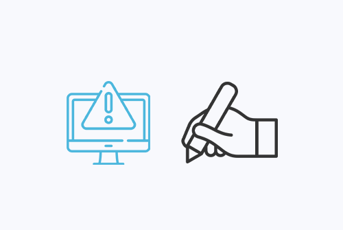

Respuestas
¿Qué es el copywriting y por qué es importante en el diseño web?
El copywriting es el arte de escribir textos persuasivos con el objetivo de impulsar a la audiencia a realizar una acción específica, como comprar un producto, suscribirse a un boletín o contactar a la empresa.
El copywriting en el diseño web es crucial, ya que a través de titulares atractivos y contenido relevante, no solo capta la atención del visitante y transmite la esencia de la marca, sino que también mejora la experiencia del usuario al facilitar la navegación y la comprensión de la información. Además, mediante técnicas de redacción persuasiva y la optimización para motores de búsqueda (SEO), el copywriting impulsa la conversión y atrae tráfico orgánico de calidad, lo que resulta en mayores ventas y mejores resultados para la empresa.
¿Cuál es la diferencia entre copywriting y UX writing?
La diferencia principal radica en su objetivo: el copywriting busca persuadir y motivar a la acción, enfocándose en la venta y el marketing, mientras que el UX writing se centra en facilitar la experiencia del usuario, proporcionando claridad y guía en la interfaz. En resumen, el copywriting vende, y el UX writing guía.
¿Cómo influye el tono y la voz de la marca en el copy de una página web?
El tono y la voz de la marca establecen la personalidad y la forma en que la marca se comunica con su audiencia. Un tono consistente y una voz auténtica generan confianza, conectan emocionalmente con los usuarios y refuerzan la identidad de la marca, lo que influye directamente en la percepción y el engagement del público.
¿Qué técnicas de copywriting pueden mejorar la conversión en una web?
Técnicas como el uso de llamados a la acción claros y convincentes, la creación de urgencia y escasez, la utilización de testimonios y pruebas sociales, y la redacción de beneficios en lugar de características, son esenciales para impulsar la conversión. Además, la segmentación del público y la personalización del mensaje aumentan la relevancia y la eficacia del copy.
¿Cómo se equilibra el texto con el diseño visual para mejorar la experiencia del usuario?

El equilibrio entre texto y diseño visual se logra mediante la jerarquización de la información, el uso de espacios en blanco para evitar la saturación, la elección de fuentes legibles y la coherencia visual. El texto debe complementar el diseño, y el diseño debe realzar el mensaje, creando una experiencia armoniosa y fácil de navegar.
¿Cuáles son los errores más comunes en el copy de una página web y cómo evitarlos?
Los errores comunes incluyen la falta de claridad, el uso de jerga o lenguaje técnico excesivo, la ausencia de llamados a la acción, y la inconsistencia en el tono y la voz. Para evitarlos, es crucial conocer a la audiencia, utilizar un lenguaje sencillo y directo, revisar y editar el copy, y mantener la coherencia con la identidad de la marca.
¿Cómo se puede optimizar el copy para mejorar el SEO sin sacrificar la claridad del mensaje?
La optimización SEO se logra mediante la investigación de palabras clave relevantes y su inclusión natural en el copy, la creación de contenido de alta calidad y valor para el usuario, y la optimización de meta descripciones y títulos. Es fundamental priorizar la claridad y la relevancia del mensaje, evitando el relleno de palabras clave y asegurando que el contenido sea útil y atractivo para la audiencia.
¿Qué papel juega el storytelling en el copywriting web?

El storytelling permite conectar emocionalmente con la audiencia, transmitir los valores de la marca y hacer que el mensaje sea más memorable. Al contar historias relevantes y auténticas, se genera engagement, se construye confianza y se fomenta la identificación del usuario con la marca, lo que influye positivamente en la conversión.
¿Cómo adaptar el copy a diferentes formatos y dispositivos (móvil, desktop, etc.)?
La adaptación del copy implica la optimización para la legibilidad en pantallas pequeñas, la utilización de párrafos cortos y concisos, la jerarquización de la información y la priorización de los elementos clave. Además, es importante considerar el contexto y el comportamiento del usuario en cada dispositivo, asegurando que el mensaje sea claro y accesible en cualquier formato.
¿Cuáles son las herramientas y recursos más útiles para mejorar el copywriting en diseño web?

Herramientas como Grammarly y Hemingway Editor ayudan a mejorar la gramática y la claridad del texto, mientras que Google Analytics y SEMrush proporcionan datos sobre el rendimiento del contenido y las palabras clave. Además, recursos como blogs de copywriting, cursos en línea y libros especializados ofrecen conocimientos y técnicas para perfeccionar las habilidades de redacción.